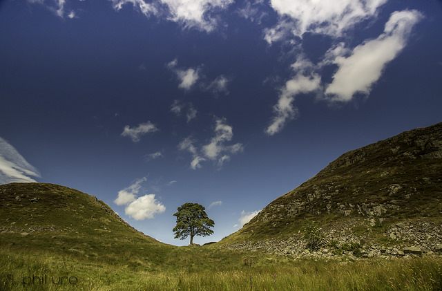

找岔子
通过观察和分析，通过提高认识，通过灵感和苦苦的追索，你找到了一个主题。现在一切就绪，你打算把它拍摄下来。你激动，你得意，你神采飞扬。种种形象在你的心中飞舞，你会显得迫不及待，想尽快把它拍下来。
冷静下来吧，不要让激动冲昏你的头脑。你希望一位激动的外科医生来给你动手术吗？或者乘坐一位激动的驾驶员驾驶的飞机吗？不，你一定希望他是一个能客观地作出决策，不为情感的风暴所动的冷静的人。同样，拍这张照片时，你也应该希望自己是这么一个人。要放松。怎么才能放松呢？只有多拍摄。等到激动的涟漪平静下来以后，再对你的主题作出反应，进行拍摄，如果还是平静不了，那么就重新来一次。如果你想节省胶卷，那么就耐心地观察，到你能够客观地看待景物时再开始拍摄。
在抑制了自己的情感，把激动封进瓶子，把奢望圈进栅栏之后，你就能细察面前的景物了。你还必须找岔子挑毛病，这是你纠正偏差的最后机会了。确认你所看到的就是照相机所看到的，只须对取景器中看到的视觉要素作出反应。当你用取景器观察时，把自己的心境调整到这样一种状态上来，即：好比你是站在朋友的起居室里，欣赏镜框中由别人所作的画一般。把视点、主体的位置、景深、快门速度、色彩平衡、结构、照明、构图等全部检查一番。
这时，你就应该注意，背景上树是否起了破坏作用；如果起了这种作用，你就应该改变视点。你还应该审视楼梯上阳光所形成的反差是否太大了。窗户里的脸孔是否被阴影遮盖了。
现在你应该在众多的画面中作出抉择了，这时，你如果意识到自己选用了打破惯例的处理方法，你可能会把人们对被摄体的注意转移到技巧上来。如果这正是你所追求的画面，那也没有什么不可以。一切得由你自己抉择。
